(日記とか言うモノ)
なんだか都内や電車の中の層がいつもと違っていて、不思議に思っていたら・・
え、もうゴールデンウィークなんですか？
すっかりカレンダーの流れとは無関係な日々に慣れちゃってちょっと焦りを感じ始めている今日この頃。だって明日も仕事だもの。
ローカルでは漫画好きの友人とかもいるんですが、最近話が合わなくなってきてちょっと困ってます。今じゃ日本の漫画よりアメコミ買うほうが多いからなあ・・・ていうか、アメコミ話は無視されます。まあ、いいけど。話合わせるために読んでいるわけではないから、さ。
アメコミとかカートゥーンの話題ってきっとオタクの仲間にすらいれてもらえないジャンルなんだきっと。ふん。去年のオタク大賞だって洋ものの話なんてこれっぽっちも出てなかったし、岡田斗司夫なんていまだに「マーベルポーズ」とかウン十年前のネタを今だに言ってるくらいだし、どーせそういうものなんでしょ。
ちょっとスネてるのは、楽しみにしていたダーマ＆グレッグの第一回を勘違いで見逃したことに気が付いたからなのです。明日からかとばっかり思ってたよ〜。ちきしょー。エイリアスはちゃんと見逃さないよう注意せねば。
とまあ、洋ドラの話もなかなかローカルの知人には通じにくく、ややしょんぼり。
関係ないけど、地上波のドラマ「離婚弁護士」、初回はめちゃめちゃ気持ち悪いカメラワークでなんじゃこりゃ？と思ってたら、この間みたら普通のカメラワークになってた。なんだったんだあれは？どーでもいいですか、はいそうですか。最近洋ものばかり見過ぎてるせいか、アニメにしてもドラマにしてもへんなとこに違和感を感じるようになって、ちょっとマズイかと思うことしきり。
それはともかく、昨日から海外からのアクセスがどっと増えたんですが、なぜですか？どこからかリンクされたのかなあ？しかし、よりにもよって今のトップ絵の時はないだろ。はずかちー。
サイトの日＞英翻訳かけて自分のとこ見てみた。
すげー、英語がいっぱいで、なんだか英語サイトみたいだ！（あたりまえです）
でも英語めちゃめちゃだ〜！こんなんで内容わかるものなんでしょうか？不思議です。
特に日記。はなからまともな日本語でないから、翻訳したらさらにめちゃめちゃに。ビリマンとかブロとかバタとか日本独特のカタカナ省略なんて意味通じないよなあ。
そんななかでも、「絵」があるとなんかほっとします。「絵」があると言葉はわからなくてもそれなりに楽しめる。ふーむ。「絵」の力というのは偉大なんだなあ。 へたでもいいからもっと絵を描こう！うん、明日からそうしよう。＜こういうことを言う人間を信用してはいけません。
最近は海外のファンアートとか見ても、ほとんど日本とそう変わりなくなってきているなあ。
このお方は「ロングソックス＆パンツ派」ですな。
あちらの方はレスのコメントってオーバーな気がしないでもないですが、分かりやすくていいかも。この絵を見て「ブロッサムがエヴァのアスカちゃんみたい」な発言に、「そう見えるものなのか？」とか変なとこで感心してたり。
bleedmanさんはフィリピンのお方。海外＝米国なんてイメージをもちがちなんですが、世界はもっと広いものなんだと。他にもイギリスやカナダ、オーストラリアなどの方もちらほら見かけるし。あーあ、ワシも英語勉強しなおそうかなあ。とりあえず、テキストで意志の疎通ができるくらいのレベルにまでいけると世界が広がりそうでいいよなあ。
ファンアートと言えば、PpGとかMLaaTRとかいっぱい描いてるCandyRobotさん。このお方はオリパフならぬオリロボなんかも展開してたりするんですが、これとか、模様の位置ちょっとアレではないでしょうか？なんて(笑)
オリパフといえば、最近ものすごい勢いでオリパフ漫画を更新しているPP-izeさんが気になるところ。ただ、ここはサイト構造が変わっていて、最近ようやっと把握できましたわん。
パフ漫画といえば、昨日の日記で書いたJUNK KOH-PORATIONさんとこの日本語訳ものを見て「もっとないのですか？あったら教えてください」と俺にメールで質問してくるのはやめてくらはい。そういうことはちゃんとそのサイトの管理人さんに聞くように。海外のサイトってわけでもないんだからさ。
☆))Д´) ﾊﾟｰﾝ
_, ,_ ∩☆))Д´) ﾊﾟﾊﾟｰﾝ
（ ・ω・） 彡☆))Д´) ﾊﾟﾊﾟﾊﾟｰﾝ
⊂彡☆))Д´) ﾊﾟﾊﾟｰﾝ
☆))Д´) ﾊﾟｰﾝ
まあ、一応ギャラリーのところをよく探ってみてね。とだけ言っておきますが。
感想とかあるならちゃんと、その管理人さんに伝わるほうがいいと思うよ。多くのサイト運営者の方はちょっとしたコメントでもうれしいものだ。と、私は思うのですが・・・
ちょっと原宿に寄ってみました。
ここんとこ仕事先の関係でこのへんにゆくことが多いのですが、まあ仕事なんでのんびりできるはずもなく。が、今日は少々時間があったので、のんびりと原宿をひとりかもねむ。
キャットストリートのあたりはノンビリできてけっこう好きです。裏路地だからかな？やっぱり車があると落ち着かないものです。牛肉100%に戻ったケバブを食べながらキディランドとかに寄ってみました。
草薙くんいるかな〜〜〜。（なんでも「ぷっすま」で草薙くんがパワパフのDVDを選んだらしい）
いるわきゃないですが、今だにここはシッカリとパワパフコーナーがあって良いです。パワパフのビデオも流れてるし。小さな子でたむろってるかと思いきや、私が行った時は、大きなおねいさんたちがたむろってました。OLさん？ちらりとのぞき見ると、買っていったのはブロのぬいぐるみやらバブのグラスとか・・・
バターカップも買ってあげてよ！！！
おまいら、このファンコミックでも読め！！The Puff No One Wanted（日本語訳はJUNK KOH-PORATIONのBBS参照のこと）
パワパフコーナーを堪能したところで、デイズニーコーナーへ。
キム・ポッシブルやフィルモアあるかな〜。
あるわけありません。かろうじてリロが1点のみ。
くぉらディズニー！おまいら、いつまでもカビの生えたコンテンツで喰ってるんじゃねーよ！そんなことだから、だんだんショボショボになってゆくんだよ。もっと、もっとシーゴーを！イングリッドを！
それにつけても、フィルモア面白すぎ。良くできたストーリーもさることながら、さりげなーく、別の事件にかかわったキャラが背景にちらっと出てくるとこが細かくてうれしい。
そういえば、フィルモアに佐藤せつじさん出演です。イケメンの中の人として。いやー、最初は全然気が付きませんでした。某所で指摘されて改めて見直すと確かにこの声は佐藤せつじさん！！ちょっと鼻にかかった感じがジェイソン(笑)
そんなフィルモアのビデオクリップ。見たことある人にはこの校長の笑顔が不気味。しかし、コレ見てもフィルモアの面白さはちっとも伝わらないと思うけど。フィルモアのキモは「物語」だから。でも、タラちゃんのイングリッド萌え。（吹き替えもいいけどね）
あと、当然ながらブリスターも寄りましたよ。今はスパイダーマングッズに力いれてる様子。店内ではゲンディ版スターウォーズが流れてました。
今月のパワパフコミック、けっこう面白い。よく見たらライターJennifer Moore & Sean Carolan、アーチストPhil Moyの黄金コンビ。面白いわけだ。
黄金コンビといえば、DiniとTimmの黄金コンビが再びコミックを！の"Harley and Ivy"が楽しみ。ゴッサムガールズでもそうだったけど、妖艶でありながら環境テロリストの重め雰囲気のアイビーがハーレィと組むとなぜかドタバタキャラに。おもろ過ぎ。あと、Timmが描く素顔のハーレィ萌え。さらに、#3の表紙おもろ。バットマーン(笑)
ジャスティスリーグもオリジナルストーリーのDVDセールスだそうです。
Justice
League: Star Crossed DVD
なんかホークガール姉さんが活躍しそうな感じに書いてるのに、パッケージであんなに後ろの方にいるのはなぜですか？ここぞとばかりにでしゃばるフラッシュ。ていうか、ランタンやジョンはどこですか？
それより、またですよ、またパワパフのショーですよ！
チラシに告知が載ってるらしいので、さいたま市民の方はチラシをチェックしてみるといいかも。
「ゴールデンウィークに川越あたり？」なんて予言は微妙にズレで
5月22日の大宮。むむむ微妙な誤差。
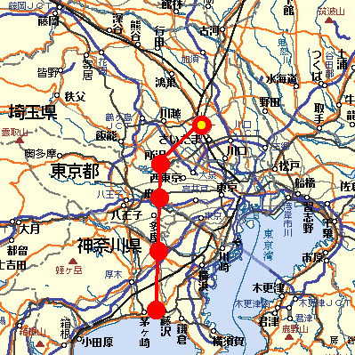
そしてパワパフラインはこうなる。
惜しい。くかっと曲がってしまいました。うーむ、東京湾一周でもしたりして。
藤沢なんかよか今度の方が全然近いんですが、さすがに3回も同じモノを見にゆくのはバカだよねえ。
( ﾟдﾟ) はっ！ぼくちんまだガールズと握手してなかったよ！！
い く か ・・・・（バカです）
なにやらスパイダーマン・アニメシリーズがCNでやるみたいですね。しかもけっこうな本数。
実はスパイダーマンってそんなに思い入れはないんですが、でもやっぱりちょっと驚き。
多分X-MENとかタートルズとかがやってたころの94年のスパイダーマンだとおもう。この時期は日本における第二次アメコミブームのが起きてたんだけど、なぜかスパイダーマンは日本にこなかったんだよなあ。と、いっても洋ものやってたのってテレ東とNHKくらいだったけど。
カートゥーンやアメコミ系のグッズのたぐいが欲しくなると、当然の流れとして、eBayに手を出すとか、個人輸入にはしったり、現地で直接買うとかにいくようだけど、私はなかなかそうはならない。と、いいますか、向こうのグッズみてもそれが直接的に「欲しい」というとこまでゆかない。リバティーベルのフィギュアとかあったらスゲエ欲しいけど、ないもの。そう、ないんだよねえ、自分の理想とするグッズてのは本場海外だとしてもなかなか。となると・・・・
最近よく思うことは・・・自作・・・しかないんじゃないかと・・・・
そうだよ・・やっぱ自作しかないよなあ・・・理想のグッズを求めるとなると・・・
でも、この季節どうにも気分がだるくて、そこまでやるテンションがあがりずらい。めんどくせ。無気力とは死に至る病とは思ってはみても、なかなかどーにも。ほかにもやりたいこといっぱいあるし、まったりとノンビリとだらだらとゲームとかもしてえなあ。
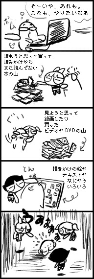
中途半端な人生ですいません。
もうじき完全にお払い箱となるPowerMacのフォーマット作業をする。サーバー用にでもするかなあ、とか思ってはみたものの、あまりのレガシーさにどうにもこうにもならないことをあらためて認識する。
なにしろ内蔵HDは500MBだ（しかもF-SCSI）。
500・・・GBでなくて、MBかよ・・・ハイテク器機の進歩の早さを痛感。500MBといえば、いまや半導体メモリですらそのくらいはいく。なんちゅうスケールダウンだ。しかも、当時はそれでも今の半導体メモリよりはるかに高かった。なんちゅうデフレや。
こんなんで、俺はなにやってたんだろ・・・今思うと不思議だ。
そうしてると電話があって、知り合いの大学生がレポート制作のためにパソコンが必要なんだけどあまってないか？という相談。よく聞いてみると、レポート提出はフロッピーでしか受け付けられず、フロッピー付きのパソコンが欲しいとのこと。必要なソフトはワードだけ。
ふと、ずーっと昔に使っていたノートPCがあったのを思い出す。
さすがにバッテリーはへったっていたものの、有線であればちゃんと起動した。さすがこの当時質実剛健ハート的トラブルは皆無だったダイナブック、タフだ。
ペンティアムMMX 225MHz メモリ32MB HD1GB Windows95
しょぼい。（こちらにしても、こんなんでなにやってたんだか・・・）
が、フロッピーは標準装備だしワードだけの使用なら問題ないだろうってことで、それでいいなら貸すよと言っておいた。
バリバリカスタマイズしまくっていたので、あわてて標準ぽいシステムに戻す。
見た目や操作をMacクリソツにしてたし・・・ アイコンはMacのものだし、ウインドウのスキンをMacライクにしてるは、タスクバーは上にあるわ、アップルメニューがあるわ、ウインドウバーをダブルクリックするとウインドウシェードするわ、「ごみ箱」を「ゴミ箱」にしてるわ、システムフォントを疑似osakaにしてるわ、まったくなにやってたんだか俺は。、
それにしても、フロッピーで提出ってなによ。いまだにフロッピーなんて使ってるものなの？
その大学がそうなのか、その教授がそうなのかわからんけど、なんだか不思議な感じだ。
BBSでの銀次郎さんのカキコミにあったBLOGサイトのからリンクされてるサイト（ややこしい）とか見て思ったこと。絵描きの間でblogツールが普及しない理由 このへん。
いつのまにか言葉としてぽっこり出てきた感のあったブログですが、なるほど、キモは「情報の共有」というところにあったのですな。まあ、もともとハイパーリンクとインターネットというモノ自体が含んでいた概念だったけど、それをより顕在化させた手法こそがBLOGであったともいえる。ふむふむ。
そこでかなり興味深かったのは「共有と交流は似て非なるもの」というところですね。
「で、これは推測ですが、同じ絵界隈でも、「絵日記」と「イラストページ」では、違うのではないでしょうか。情報の「共有」と、絵描きとしての「交流」は、似ているようで大きく違う気がします。交流はしたくても、共有したくないって方は多いのではないでしょうか。」
なるほど。確かにたとえそれが二次創作ものであったとしても、「絵」を共有しよう、してもいいと考えるサイトは、まず見たことがない。早い話が、HTMLへの無断リンクとはOKですよと言いながら、（出自が明記されていようが）イラストなどへの直リンク、転載は不可というのがほとんど。
デジタル上では同じ「情報」にすぎなくても、テキストは「情報」、イラストやその他のコンテンツは「作品」という考えが主流なんだなとあらためて思った。うーん、このへんちょっとうまく言えないな。長めの文章となるとこれも「作品」と捉えられているからね。そうではなくて、例えば「吉野家コピペ」みたいなものや、AAなどはは改編や流用転用は全然OKみたいなものと、イラストなどの改編転用などは概念が違うみたいなことか？（イラストでも一部AA改編みたいなのと同じノリのコミュニティもあるけどね）
よく海外のサイトにイラストが無断転用された、改編利用されたという日本のサイトを見るが、海外ではここでいうネット上のものは「共有ソース」として捉えている部分が多いのではないだろうか、と思った。
キャプチャー画像が日本では（表向きは）「遠慮しいしい」アップされるのと違って、けっこう遠慮無くバンバンアップされてるのってのも根底に同じような意識があるのかもしれない。イラストやキャプ絵、はては音声、クリップムービーなどもBLOG的「共有ソース」思想で扱われているのだろう。
図書館と本屋の違い？うーむ難しい。そもそも別の概念に例える事自体が間違ってるのかも。
転載されて文句を言ったら「ステキな絵だと思ったから展示したのに、なんで文句言うの？より広く公開されるのに」などと逆ギレされた、という話も逆ギレではなく、素直に彼らの思想にもとずいて正当に主張しているだけなのかも。
無断転載にしても、日本においては作品ができた瞬間に自動的に「著作権」が発生する法律になってるけど、コピーライト登録しないと著作権が発生しない国の場合、同じコトが言えるのだろうか？とか色々考えてしまします。
ちなみに、オリジナルをそのまま使おうが、模写しようが著作権的には同じことのようです。機械を使おうが、人力で模写しようが、苦労しようが、時間がかかろうが、クオリティが高かろうが低かろうが、正確であろうが不正確であろうが（つまりうまかろうが、下手かろうが）、同じ。手法は問わない。美術館などで、写真はもとより模写も禁じられているのつまりはそういうこと。
また、アレンジしようが、自己流であろうが、元のキャラクターなりが特定できれば同じコト。「その作品を連想出来るもの」であれば同じコトなのです。だからファンアートや同人誌なりがグレーゾーンと言われるわけなんですよねえ。
最近は同人誌あがりの漫画家さんなどが「同人誌におけるアレンジ・二次創作」は積極的に認めていながらも、あまりにそっくりな同人誌作品（ていうか、トレース模写）には、はなはだ遺憾発言したり、模写での創作アレンジはなにも言わなかったりしても、機械による複写による創作アレンジは認めない風潮があったりと、このへんのさじ加減は微妙です。（いわゆる、作品をコピーしてセリフや構成を変えて作るコラージュ的二次創作のこと）
あと、引用。
主文を補強するために、オリジナルから一部を転用することを引用といい、これは無断で出来ます。（そういやどっかでとある小説の盗作疑惑が出たときに「無断引用された疑いが」なんて文があったけど、使い方間違ってますね、「引用」というなら無断でできるからです）
多分今でもweb上の作品を「引用」して「無断転載」するときっと怒られます（特に日本では）。
それから、絵じゃなくて文章ならよいかっていうのも微妙な問題。
特に海外なんかだとキャラクター名自体を「商標登録」してたりしますし。「キャラクターの二次使用」という考えからみれば表現方法は問わないからです。映画のアナザーストーリーとかを勝手に作って小説にして出版するってのは、まあマズイことだってのはわかる気がします。でもさあ、商業誌で堂々と「某有名探偵の孫」とか言ってるのみると、なにがなんだかよく分からなくなる。
一応「既存の著作物の修正増減に創作性が認められ、かつ原著作物の表現形式の本質的な特徴が失われてしまっている場合」著作権違反とならないから、つまり物語やキャラを転載流用しても別の話になってればOKって理屈らしいのですが、うむむむ。じゃあ、ミッキーマウスの孫とかで話作ってもOKってこと？
「共有と交流」からずいぶんと話がそれちゃったような気がするうえに、自分の首をしめかねないマズいことを書いたような気もするけど・・・・とにかく、ネットの普及は思想の違いがより強く顕在化するものなのかも、とか考えてたらこうなった・・・ということで。チキン野郎なんで、結論は保留しとこう。
法律や思想うんぬんよか、「苦労して作ったモノを、苦労しないで他人のふんどしで勝負するのはムカツク」って心情的要因が一番でかいのかも。「相手も苦労するなら、まーいいか」心理ともいえる。
でもって、情報の収集や加工や仲介は「あまり苦労してないこと」と多くが認識してるってことでもあるかな。うーむ、なんかそれも違うような気も。そもそも「情報」っていうのはどこからどこまでを言うのだろう。特にデジタルの場合。
余計なこと書かないうちにこのへんでやめとくか。
仕事あるかと来てみりゃなにもなくて、一日中ぼーっとしてたり、かと思えばオフなのに仕事はいったりして、俺の人生ふりまわされっぱなし。
あいかわらず吼えペンはシャレにならん(笑)
まあ、CNの番組構成にも振り回されっぱなしですが。
昼と夜の温度差にうちのめされて、ややグロッキーぎみ。
なにげに覗いてみたアルプス電気のサイト。
げげげげ、いつのまにかMD5500がこっそりと復活してる！ネット販売で買えるじゃないですか！
即注文。
これでついにPowerMac7100もお役目終了となりそうですな。
MD2010sのためだけに今だに使ってました。なにしろMD2010sはSCSI接続なので、流用がきかんのよ。
マイクロドライプリントでしか出来ないことが多すぎて、私にはどーしてもこのプリンタが必要なのです。ていうか、もう惚れ込んじゃってるからインクジェットなどでは満足できない体に。熱転写サイコー！
どのくらいこのプリンタが好きかっていうと、今でも年賀状は必ずこれで印刷するくらい。
昔ニフティのMDPフォーラムに入り浸っていたくらい。
昔ムリヤリ会社にも導入させちゃったくらい。
昔MDプリンタのサイトやってたくらい。
昔MDのプリントコンテストに応募しちゃったくらい。
好き。
またMDP熱が再燃しちゃいそうです。
なになに、パワパフ新作分は全8話ですと？
確かにスペシャルは2時間×2日で全4時間。新作はこのスペシャルっきりだったら、全8話だけど・・・
ビリマンが放映開始した時のように、新作がスペシャルで先行放送され、平日は旧作リピート、土日に新作分で18エピソードくらいまでやると思うのだが・・・どうよ、どうよ！
とりあえず、8エピまでだとすると「Pee Pee G's／Boy Toys」まで？
City of Clipsville見たいよ！Never Say D.Y.N.A.M.O. 見たいよ！
でなきゃ、やだい！やだい！やだい！
ビリマンといえば、5月の復活はなし・・土日にてなんとか生き延びるジョニーブラボー、いまだ復活の兆しみえぬエドエッド、Toonamiやハンナクラッシクも変更無し。なにげにしぶといトータリースパイズ。今だ続くCNの番組サバイバル。
それにしても、あっさり復活するかと思ってたビリマン、なかなかじらしてくれまする。ガールズと一緒に6月復活でしょうか。ていうか、正直ガールズ一日4回もいらないから、一枠ビリマンに譲ってやれ。
This
spacey talk-show host is a Hanna-Barbera ghost
SGC2C 10周年ということでの記事。Mike Lazzoさんのインタビューもあります。
「ヘイ、10年もやってるのにずっとしょぼしょぼの動画ってのは、どーよ？」
「大人は絵の質とかあんま気にしないって、漏れらは知ってんのよ。おこちゃまは、ぴかぴか色ついたものが動いてりゃそれでOKだけど、ナイスな大人はよっぽどスゲエ絵じゃないかぎり、スグあきちまうものさ。それよか、いかれたいかしたトークが大事なんよ、うひゃひゃひゃひゃ」
（デタラメ意訳）
Mike開き直りっ！！
日本の萌えブームとは真反対の方向を向いてるMike Lazzoさん素晴らしすぎる！
・・・・でも、そんなことばっかり言ってるから日本に来ないのよ・・・
しかし、今後もこのバカを貫いていて欲しいものです。
話はかわって。
最近チャイルドブランドがらみの仕事をしました。（といっても、そんなに深くは関わってないんだけど）
そこで、メゾピアノとか、デイジーラバーズとかを私が知っていることで、同僚らがえらく驚く。（まあ、そりゃそうだ）
「いや〜、べつにパワパフがらみでたまたま知ってんだよ〜」とは言えずごまかす私。ヘンなやつ度数が一気に上がった瞬間。おお、おりはヤバい人じゃないですよ、ないですよ、そんな目で見るな〜。
科学ネタとかけっこう好きなんですよね。
Brain
implant devices approved for trials
（脳内埋め込みデバイス実用化へ）
攻殻機動隊の世界にまた一歩近づいた！
こういうSFの中にあって、それに近づくような進歩ってのはけっこうあるものなんですが・・・
・・・・( ﾟдﾟ)ﾎﾟｶｰﾝ 紙・・なの・・・
科学技術の進歩というのは時折意表をつく方向からやってくるので、SF屋のみなさんはさぞかし大変なんだなあと思ったりした。とりあえず、こんなの想像したSFとかは聞いたことないです。現実ってスゴイ。
とかなんとか言ってると、
竹内均さん死去
ええええええええーーーー。ニュートンはいまだにたまに買ってますよ！
やっぱり長さんが全員集合をかけてるんだ。次は音楽業界？
今日原宿に行ったときにこんなお店を発見しました。
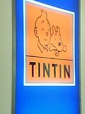
タンタンショップ！
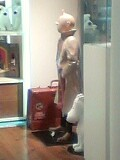
入ると原寸大タンタン様がお出迎え。
なかなかキレイなとこでした。タンタンのフィギュアとか、コミック、ビデオ、Tシャツなどいろいろ。なおかつ、クイック＆ブラツキ（だったったけ？）のコミックやフィギュアまであったのは驚き。
ピンクパンサー様は40周年だけど、なんとタンタンは75周年なんですと。すげー。
噂の実写タンタンは2006年公開予定。
タンタンのコミックは前から読んでみたかったんですよ。「絵本」って聞いてたけど、やっぱりコミックじゃないですか！！よし、買おう！と思ったけど、ちょっと財布の中身が寒かったので、今度の機会に。
タンタンのコミックには躊躇したくせに、別の本はちゃっかり買ってたりする自分。
その別の本とは・・
これだ！
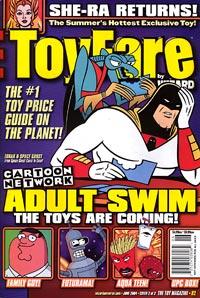
米国のトイ雑誌でアダルトスイムの特集が！！！！！
悩む間もなく速攻でレジにもっていった自分。
あ、これはタンタンショップではなく別の店で購入。（タンタン様の店にこんな俗な本があるはずがない）
SGC2Cはもちろんのこと、ホムビやフィーチャラマの記事も。フィーチャラマ、パメラアンダーソンもゲスト出演したのか・・・やっぱ見てえ。
他にもジャスティスリーグ・アンリミテッドの記事もありました。そういえば、確かにスーパーガール、JLには初参戦か。
それから、米国CNではいよいよ「Miguzi」枠が始まった様子。
ぎゃあ！TMNTがやってるよ〜！！！！ 日本CNでもやってくんないかなあ。
あのCode:Lyokoてのはなんじゃらほい。絵はなんか微妙・・・
TTの新しいCMも。
書類を整理をしていたら、昔描いた落書きを発見しました。
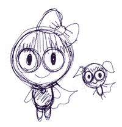
初めて描いたパワパフ。
多分どっかでみかけて「今日みたあのキャラってこんな感じだったよなあ・・」と記憶をたよりに思い出して落書きしたもの。（まだ「パワーパフ」の名も知らなかった。なおかつ日本産のキャラだと思ってた）
丸くて、目がおっきくて・・・という風に覚えていたようです。リボンも覚えてたっぽいけど、やっぱ違う（笑）。あと、どうやらブロの後ろ髪をマントと誤認していた様子。
この半年後にくらいに再びパワパフに遭遇し、ハマりまくるとは、当時は予想できなかったなあ。
PpGWorldにてどばーっとスクリーンショットが公開されましたな。
待てば日本でも見られるので、新鮮な気持ちで見るためにもここはガマンして、見ないでおこうと思ってました。 が、ダメでした。意志弱〜。
で、そのPpGWorldですが、キャプ絵ばかり見てないで、たまにはフォーラムでも覗いてみるのもおもしろいです。
そんなわけで、Spitfireさんのファンコミック。
すげー！ かわいいー！ うめー！ おもしろいー！！
なにげない日常を描いたものですが、すっごくイイんですよ。
特にSpitfireさん、バタカファンだからかバタカ漫画が多くて、それもまたイイ！バタカファン卒倒間違いなし。バタカのロデオ漫画かなり好き。でも博士がちょっぴり太め（笑）
あと最近はぎしさん（PPPPPPG）とこの「笑いバブルス」とか、
なす 紅瑠さん（.>>MirCar.）とこの「あくびブロッサム」とかの、なにげないミニアニメとかにほんわかしてしまいします。特に、なす紅瑠さんのとこのみたいな、「手書きによるゆらゆら感」ってのは独特の味があっていいよねえ。
TeenTitansのPV見ました。
テレテレテレテレ・・の、あの出だしとともに、2つの光の玉がぴゅーっと飛んできて・・・
PUFFYに。
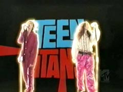
すんません、表記間違えてました。
「TeenTitansのPV」ではなく、「PUFFYのPV」です。いやー、あたりまえだよねえ。
そんなわけで、ほとんどパフィーの二人がCG合成バックを背景に歌うPVでした。
（全編TTのアニメ映像でつづられるものだと思いこんでいたバカ）
あ〜でも、ちゃんとTTのアニメのカットも流れてましたよ〜。
まあ基本的には（みなさまおなじみの）あのTTオープニングのカットがほとんどなんですけどね。
それ以外では＃10「Mad Mod」のやつがけっこう多め。これは日本では未見の人が多いだろうから、この部分だけちょっぴり映像先取りってとこでしょうか。
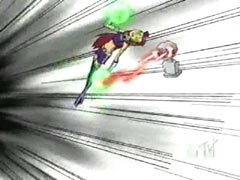
（この回はかなり面白いからなあ。でも、massangeanaさんのキャプで見られるような、おもろ映像はなし。残念）
あと、こんな感じの遊びもあったり。
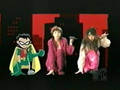
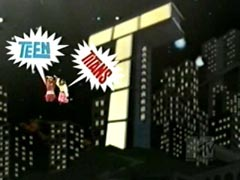
まあそれでも、普通のパフィーファンには初めて見るTT映像かも。
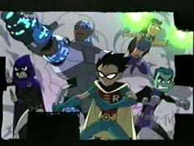
ちゃんと5人ばっちり出るし、キャラごとに名前とアップ（アニメのオープニングの後半のやつね）が出るから、かなりの宣伝になっているような気がしないでもない。気持ちロビンのカットが多め。
ただ・・・PVとしてはちょっとショボイかも・・・と思ってしまったことは内緒だ。予算あんまりなかったのかな？
横山光輝の訃報は海外にも伝わっているようで、ここでも冥福を祈る方が。＞アニメ関係のお仕事をしてるRikkiさんのサイト。 「才能は才能を知る」
さて、米国でのパワパフというと、博士祭〜ってことで博士話が放映中のようですな。ダイナモ話ももうすぐ・・ドキドキ。
てなわけで、
博士 × カレ のサイト。
人の嗜好はさまざま・・・・・世界は広いよなあ・・・・・
最近海外での局と制作とのこじれ話を耳にすることが、しばし（一つの作品だけでなく）。正直その手の話は聞いてていい気分はしないよなあ。ずっしりとヘコむというか。どうせ、どんな情報にしても、発言サイドによって「言い分」が違うだろうことはわかっているだけに、どうにもこうにも。
まあそれでも、視聴率すらとれていれさえすれば、まだギリギリ関係をたもっていられるんだろうことは、日米同じなんでしょうねえ。
てなわけで、米CNでの2004 年Q1レーティング情報
Teen Titans,ビリマン,エドエッドがのびているようだ（多分）。エドエッド？そんなに人気なのか、あっちでは？その一方で、下がってるのがあるとしたら、どの番組なのか気になる・・・
とまあ、そんな感じで今日はオフ会に行ってまいりました。（最近多くなったような・・気がしないでもないなあ。）と、言っても仕事があったので、途中参加。まあ、飲み会にいったようなものでした。
チャットじゃないけど、なんだかんだいっても「会話」が一番楽しいので、それはそれで。
えーと、オフ会漫画とか期待されているようだったりしますけど、特に今回は、なにもおりてこなかったので、なし。
替わりといってはなんですが、ちょうど数日前に誕生日を迎えた方がいたので、サムライジャック好きのその方にプレゼント漫画。
おめでとーーーーー。
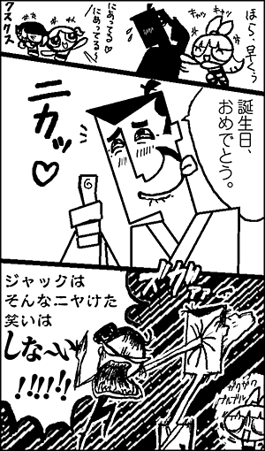
（゜д゜;≡;゜д゜）と、特定のモデルはいませんよ・・・いませんたらっ！
横山光輝のデザインするロボって、どれもカッコよくて好きだったなあ。
自分、スマートなフォルムのロボより、ずんぐりした重そうなロボが好きです。
覚醒人とか好きだったなあ。グレートよかZですし。ダンバインよかドラムロ（笑）。あ、でもガンダムはZのほうが好きかな。まあ、それよりジオのほうが好きでしたが。
そんなわけで、ちまたの評判は上々な「鉄人28号」でも見てみようかなと、ちょっと思ったりもしました。
ジャイアントロボのこともあるし、期待してもいいのかな？
はっきりいって新作のアトムはどうもイマイチだったので、最近リバイバルものには抵抗が。
と、いっても映像ものって30分のものはどう見ても30分の時間がとられちゃうわけで、その時間を作るのが課題だ。
とりあえず、最近楽しみにして見ているものといえば・・・
バットマン・ザ・フューチャー と 学園パトロール・フィルモアだったりします。
ビヨンドは歯抜けにしか見てなかったので、この機会にちゃんと見ることに。
やっぱビヨンドいいなあ。JLに比べると軽快なとこが見てて楽。
しかも、あのオープニングはニューアドのスーパーマンに勝るとも劣らないカッコよさ。しびれる。
老人ブルースとテリーの掛け合いが最高ですな。ちょっとした演出やらセリフやらで笑ってしまう不思議な作品。改めて見ると、ほんと演出が細かいのよこれ。
あと、スーパーマンやバットマンらに比べて女の子の出番が多いのもイイ。ブルース・ティムの描く女の子って好きじゃあ。メラニーとかすごく好き。なんかお嬢様っぽいデーナよかメラニーのほうがいいよなあ。「昔セリーナ・カイルという・・」やっぱコッチのパターンのほうが燃えるっしょ。
でも、ロイヤルフラッシュ団、あの家族はダメっしょ。悪人とかいう以前に、その・・センスが・・・
あと、マッドスタン最高（笑）
次回はいよいよタマラ登場。話はもうちょいって感じだけど、タマラがいーのよ。貧弱で。
てなわけで、やっぱりビヨンドも未放送分激しくみたいよう。JL新作の次はぜひこっちをヨロシクですの。
だってさ、未放送分のやつに、ジャスティスリーグが出てくる話とかあるんですよ！
老後のメンバーとか見てみたいじゃない！壮年スーパーマンとか、じじいフラッシュとか見てみたくないですか？でも、ほかのメンバーは年とってないのかも。ブルース哀れ（笑）でも、そこがイイかも。
未放送分には、またメラニーが出る話とか、ブルースとエース（犬）の出会い話とかもあるんすよ。マジ見て〜。
あ〜なんですか、まだまだ先のことなんで「新作」「新作」って浮かれてはいかんですな。こう、その日に向かって少しずつテンションを上げるべきで、今騒いだってしょうがないですよ。
しかも、パワパフだからって新作が面白いとは限りませんし、ここは冷静に、惰性に長されず、予断を排除し・・・・・
って、できるかそんなこと！！ヽ(`Д´)ノ
ていうか、私にはできませんでした。
あっそーれ、
だーれが殺した
⊂(ﾟДﾟ⊂⌒つ クックロビン
し
・
・
・
で、なくて・・・・
あっそーれ
∩( ・ω・)∩ばんにゃーい
∩( ・ω・)∩ばんにゃーい
∩( ・ω・)∩ばんにゃーい
万歳三唱でございます。嬉しい時に素直にうれしがらんと不感症になるからな。あっそーれ。
とはいっても、まだまだ先なんで、とりあえずはジャスティスリーグの新作でも楽しみにしときますか。
ところで、今月の「チャンネル質問箱」やけにフランクだな。担当が変わったのか？
そーいや、PpGWorld.comで米国の5月の新作分の内容が発表されてますね。ええと、なんか面白いのかよくわからん内容。それにしても、クックさんてばいつもながらもの凄い勢いで情報開示してくれるけど・・いいのか、いいんだよな。いいことにしとこう。これからもよろしくお願いします。
えええええええええ。
週末にむけ、生活リズムがめちゃくちゃになってるスカポン太です。
ばんにゃ〜〜い ∩( ・ω・)∩
とうとう、日本CNでPpG新作の公式発表がでました。とうとうカウントダウンが始まったよ！
長かった・・・何度妄想でこの日を予測してきたことか。
しかし、気になるのは「いつ」やるかってことですな。スペシャルの中に新作を混ぜてやるんでしょうか？それともスペシャルは「おさらい」で旧作の連続放送になるんでしょうか？
よく考えたらまだまだ先の話なんで、落ち着いてこれから詳細が出てくることを待ちましょう。
だから、落ち着けってば！ﾊｱﾊｱ
CNからの発表ってことで、地上波放送ではないことは確定してので、まだスカパーなりケーブルに加入してない人は夏までに加入手続きすませとけ！DVDやビデオが出る確立は低いんだしさ！
そういえば、CNで最近流れてる新作ショート番組をいくつか見ることが出来ました。
グリムがデクスターとマンダークに誘拐されてレッドガイにそそのかされるやつ。
これ出来いいよねえ。久々のストーリーもので、見応えあります。短いのに。
ビリマン未放映時期にグリムが動いて喋る姿が見れるとは思いもしなかったですよ。グリムだけじゃなく、マンディとかもあるなら見てみたい！できれば・・・スカール編なんかないかなあ(笑)
この時、観客席にパワパフの姿が。（もしかして、席に立ってるのか？）かわええ・・・
さらに良く見ると横にはスペースゴーストが！
この中央シートは新作組が座るという暗黙の了解があるとみた。ほら、よくご覧なさいよ。モジョが「新作モジョ」でしょ！でしょ、でしょ、でしょ。
・・・だから、パワパフに続いてSpace Ghost Coast To Coastも8月くらいに放送決定ですよ！
なにしろ、10周年なんですから、じゅっ しゅー ね ん。
それからTOONAMIヒーローファイルのテリー（バットマン・フューチャー）とコンボイ（ビーストウォーズ）も見た。
いつもこのシリーズではウィークポイントが気になってます。
テリー：慢心 とか言ってるけど、やっぱウィークポイントは「女難」だよなあ。あとブルースのイヤミ。
コンボイ：経験不足 とか言ってるけど、むしろ「理不尽な命令」でしょうな。なにしろ「私のバナナ〜〜！！！」で戻るくらいですから(笑)
やっぱり、このへんのショート番組、連続放送とかDVDにでもまとめてくれませんかねえ。しかし、誰が作ってるんだろ。当然クレジットなんか出ないけど、気になるなあ。
そういえば、なんとSpace Ghost Coast To Coastが10周年なんだそうだ。
CNと共に歩んできた、長寿番組ではないですか！ デクスターやパワパフより遙かに昔からやってるんですよ！これこそCNの看板番組ではないですか！
なんで日本ではやらないのよ！（つっこみは却下）
パソコン関係が調子悪かったかと思ったら、今度は自分が調子崩してしまいました。
季節の変わり目ってやつはやっかいですなあ。
昨日は自分のメンテナンスデー。一日中うんうん言って寝てたりしました。
ホントは今日も休んでいたかったけど、なかなかそうもいかないのがツライところです。
しかも、今日はまた寒くなってるし！ひどいや姉さん！
なんだか5月にダック・ドジャースがやるらしいですね。SFですよSF！スペオペですよスペオペ。内容はよく知らないんだけど、なんとなく気になってはいた一品です。
さらにジャスティスリーグの新作も始まるし、やはりまだまだCNは勢いがありますなあ。
そんな新作が予定されているだけに、PpGの新作は5月にはまだ来ないでしょうね。て、ことは6月？それとも、やっぱり7月が濃厚な線でしょうか。
それより、米国でもいまだに放送予定すらないエピソード（Octi-GoneとかSee Me, Feel Me, Gnomeyとか）が日本では放送されるのかが、ものすご〜〜〜〜く気になります。
キム・ポッシブルでは米国では放送されなかったエピとかがさらっと、日本では放送されたりするので、もしかしたらもしかするかも、などと考えてちょっとワクワク。そんときはアメリカ人の悔しがる姿でも想像してほくそ笑むとしよう。＜ヤナ性格だな、おい。
バンプレスト、浅草花やしき買収
ちょっと気になった記事。
オタク遊園地と化しそうな予感。
ガンダムシュミレーターとか設置したりするのかしらん。
そーいえば、バンダイといえば、パワパフやTeenTitansの権利ももってるんだったよな・・・
春は人間を無気力にするよね〜。
無気力と言うか、イマイチテンションが上がらないと言うか、まあいいか ぽややーんと言うか、ああめんどくせえもう寝るかと言うか、ちょっと散歩でもしてこうようかと言うか・・・
そんなぽややーんとした日々を送ってはいないでしょうか。私はそんな感じです。ええ。
なんだか地上波では新番組がいっぱい始まったようですね。チェックする気力などないです。ええ。とりあえず、評判だけ聞いといて、いずれCSにでも昇ってきた時にでもチェックしますよ。ぽやややん。
しばらく、いかにもどーでもいい、まさに「日記」な感じなものが続いたので、たまにはブログ風なことでも書いてみっかね。
パフィー出世物語 -たまたま聞いてたエライ人-
「たまたまカートゥーンネットワークの方が渋滞中に聴いていて」
(´∀｀)うわー、なんか出来過ぎ。 そーいうエピソード作り好きそうだものなあ、あっちのエグゼクティブって。
「シンプソンズ」の声優、賃金アップでストに訴える
なるほど、向こうも声優は金にならなくて苦労してんだ・・・って
「１話につき約３６万ドル（約３７８０万円）」
「現在の出演料は、１話当たり１２万５０００ドル」
・・・・・・・
工ｴｴｪｪ(´д｀)ｪｪｴｴ工
そんなにもらってんのおおおお。日本でそんなにもらってる声優っているんだろうか？
そもそも、日本の場合その声優代だけで制作費全部ってパターンじゃないの？
新人とかの場合1話3、4万程度って聞くし。ベテランでもこんな桁はありあえないでしょう。そんなにも違うものなんですか、海外の場合って。いや、そもそも、そのギャラだったら全体の制作費っていくらよ！
手描きアニメにピリオド 米ディズニー新作映画
スティーブン・ブレンドン君がなんか偉そう。14歳のくせに。でも株主。そこがアメリカ！！
フミヤ「ピンクパンサー大好き」
「クルーゾー警部の近くにいるチャイニーズの役をやってみたい」
(ﾟДﾟ ,,) 「実写映画」の話ですね。アニメは見たことあるのかなぁ。
ピンクパンサー様祭は世界中で開催されているようですが、一番盛り上がってないのがアメリカCNのサイト。
ブラジル
ラテンアメリカ チリ
他はハードコア資料館でもいってチェックしてください。
長編アニメ映画「良寛さん」ビデオ＆ＤＶＤ化…菅原文太も出演
「アクゥの昔話」でも語ったんだろうか？
一番星もいつのまにやら70歳ですか。早いとこサムライジャックの収録しといたほうがいいんでないかい？
というわけで
Samurai
Jack Season 1 DVD & Popcorn
もうじき発売のサムライジャックDVDですが、ポップコーンが付いてくるのはなぜ？
あのポップコーン袋欲しいかも。あれ、バターカップはどこですか？
でもって、5月といえば、
MEGAS
XLRも始まるというわけですね。かつてロー・ブローと呼ばれ微妙に日本でのウケが悪かったロボットもの。日本には別に来なくてもいいなあ。むしろハーベイ・バードマンを！
ロボットといえば、ガンダムSEEDも5月から米CNで放送だったっけかな？もうソース忘れちゃったけど。あちらでは修正がどの程度はいるのかってことが話題になってた覚えが。カットや無茶な編集つなぎは不評らしいので、モザイクで対処説が濃厚。ってどんなふうになるんや〜。そんなにアレなんですかSEEDって？裸とか血とかいっぱいなんですか？
そーいえば、本国ではホームムービーズが終了したんですね。ああ。
声優賞：朴路美
日本CNは朴さんがこれ以上売れっ子にならない前に、早めに収録を・・とか言ってみる。
CNはまあいいとして、最近またまたニックで気になってるやつ。
DANNY
PHANTOM
なんでしょうか、これは？ダニーのママが気になります。 関係ないけど、向こうじゃタイニートゥーンはニックで放送してんのね。
えーと、ブログってこういう感じでよかったんだっけか？
最後にGUIっていうか、いろんなOSのアイコン比較表
drivesdevices
とか components
いやー、Windows 1.xってすさまじいなあ。お手本がなくなったこれからが、windows GUIの正念場ですな。うーん、やっぱりBeのGUIって好きだなあ。ところで、超漢字は？ TownsOS
2.xとかも見たかったなあ。
季節の変わり目ということで、春になると調子をくずす人が多いかと思いますが、なんだか機械もそうなんでしょうかね。
ブチ壊れたHDに引き続き、PCから音が出なくなったり、USBハブを認識しなくなったり、OSが意味なく不安定になったりと、最近トラブル続きです。
そんなわけで、今日は大メンテナンスデーと称してハイテクどもの整備をば。・・・一日がかりでした。
なにしろOSの再インストールから徹底してやったもので・・・
とりあえず、少しはマシになったかなあ・・・いやマシになってくれないと困る。いい天気の久々の休日を引きこもりで過ごしたのだから。
まあ、おかげさまで、とりあえずインストールはしてみたけど、結局一度も使わずHDの肥やしになっているようなアプリとかクリーンアップ出来たし、「新入生」並に気分スッキリ。
マシンの中身はスッキリしたけど、部屋の掃除はいつしよう・・・寒いうちはよかったけど、暖かくなるとなにかとヤバいからなあ。「黒くて硬くててらてら光ってて暗くて狭くて湿ったところが好きなわりに速いせーぶつ」が出たら大変ですから。
あうー、USB1.1って激遅〜。激しくいやになってきた。
外付けのHDの調子が悪く、ついにウンともスンとも言わなくなった。おいおいおい。
よくみりゃ、認識しない以前の問題で、電源いれてもランプつかないでやんの。
これ修理にだすと、「HDフォーマットしますけどいいですか」とか言うんですよ。意味ないよね。
よくよくチェックすると、HDクラッシュではなく、どうもガワの問題らしいので、ケースを買ってきた。
ムリヤリ分解してHDをとりだし、新しく買ったケースに装着。
再び認識できて一安心。
そのときちょっと驚くことが。中身のHDドライブがSAMSUNでした。
えええ、東芝とかIBMとかじゃなくて！ていうか、SAMSUNってHDも開発してたの？
なんか怖〜。大丈夫かね、これ。
確かに安いHD外付けドライブだったけど、中身がよくわからないってのは問題かもなあ。皮のコントローラーもどうもしょぼいやつだったらしく、やっぱ安物は安物ってことなんだろうかねえ。
このメーカーのやつ、この症状2台目。ここはダメだな、やっぱ。確かに他より安いんだけど、もう二度と買わない。とにかく、今後はHDは単体をバルクで買って、ケースにはめるやり方にしようと心の底から思った。食い物と同じで、中身に何が使われているか分からないで使うのは、とてもよくないことだよ。うんうん。
そんなこんなで一日が終わるのは、なんか困りものだよなあ。
今日はなんだか、色々あって疲れたなあ。
そんな私の最近のなごみ場所はPowerpuff'n'stuffさんとこのweblog.
ほう〜。E. D. Thweattさんジェニー絵もいっぱい描いてほしいなあ。
最近入手した雑誌からの切り抜き情報。
カートゥーンとは全然関係ないんだけど、たまたま日本に来ていた海外アニメーターの人との対談もの。
詳しい話は特にないんだけど、ちらほらと、ちりばめられた断片から推論してゆくと、恐ろしいことが判明した。どうも極秘プロジェクトらしく、一人は名称すらあかせない。
ディズニーが今年9月に日本アニメテイストのカートゥーンを放送する！
ことのようだ。
TeenTitansのスタッフをヘッドハンティングして現在製作中。
パワパフのスタッフだったChris Mitchellも参加してますね。ほかにもきっとアチコチからかき集めてるんだろうなあ。
それだけ、海外では「日本アニメ」が人気出てきているってことなんだろうねえ。あと、TTも大ヒットってことなのかも。ティーンものを狙って作ったキム・ポッシブルでも足りなかったか。
ディズニーも大変ですなあ。
ついに念願の握手会にいったぞ！
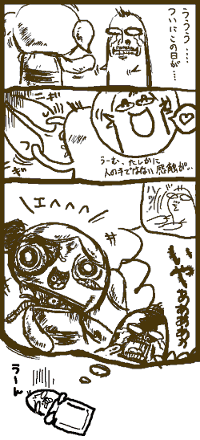
という夢を見そうです・・・
Parsec Productionsで連作ファンコミックの第二弾が公開されたようですね。
おもしれえ。
それぞれが自分の前の絵の分しか知らないで描いてるものだから、話がどんどん変化してオモロイ。カレはどーなったんだ？(笑)
しかも、前の絵とその後の絵のギャップが、もうそれだけで楽しい。9〜12あたりの流れとか傑作。#17 lordandyさんの絵とかけっこう好きかも。
今HDがけっこういっぱいいっぱい。そろそろDVDかなにかにアウトプットしとかないとヤバいです。でも、DVDメディア買うよかHD増設したほうが安上がりで使い勝手よかったりするんだよなあ・・・特に今時のHDの値段みると。
ただ、DVDなどのリムーバブルメディアに落とすと、パッケージ化された感じがして、スッキリして気分良いこともありますね。ミッションコンプリート！みたいな「終わり」感があって。
なんでも「こどもgoo」というのがあるそうだ。
ここの検索エンジンを使うと、子供に不適切なサイトはフィルタリングされて表示できないようになっている。
「ごめんね。ページがひょうじできませんでした。」
うちのサイト表示できませんでした（泣
でも、サイト全部というわけでもなく、表示できるページもある。
トップページにそんな不適切な言葉あったかなあ・・・・・
「肛門」ですか！「肛門人形」がひっかかったんでしょうか！
最初は「ぶっかけ」かと思ったんだけど、「ぶっかけうどん」のサイトは問題なかったので。
とりあえず、うちのサイトにはちいさなお子さんはトップページから入ってはいけません。どこか別のページをブックマークしてお入りください。（と、いう結論でいいのだろうか？）
そんなわけで、もうすっかりアキて全然見てなかったアクセス解析を久々に見てみる。
うわっ、3月28日から30日くらいまで、妙にアクセスが増えてる。うーん、これは新作アフレコの噂がたったあたりなので、そのためかなあ。
そこで一旦落ち着くんだけども、4月2日からもなんか妙に増えてます。しかも検索エンジン経由がけっこう多い。検索ワードはTeen Titansが圧倒的。あれか、3月末にパフィーの「59」が発売されたんだよな。普通の日本のファンが買ったときに、米国でTeen Titansの主題歌うんぬんを読んで「TTってなに？」と思って検索したにちがいない。
それにしても、「ぶっかけ」でこちらに飛んでくる人もいたんだ・・・
ああっ！「ぶっかけ
adult girls」でググるとトップに！ なんでそんなことにググルさん・・・
と、まあ何事もなかったようにシラっと書いてますが、また行って来ちゃいましたよ。パワパフショー。さすがに藤沢は遠かった・・・・
あれですよ、本当に同じ演目なのか確かめるためですよ。資料の真実性を高めるためですよ。
言い訳だな・・・・完全に。
いや〜なんか、ふと「この時間に出ると・・・間に合うな・・・」とか頭をよぎってしまったんですね。しかも「そういや前は写真撮ることばかり夢中で、じっくり堪能してなかったな」とか思ってしまったんですよ。ええ、どーせバカですよ。なんとでもいってくれ〜。
まあ、今回はじっくり劇を堪能できたので後悔はなし。今回は写真もあんまり撮りませんでした。
それにしても凄い人だかりだったなあ。幼女率が異様に高くてちょっと場違いな気分にもなったけど。でも、JUNK
KOH-PORATIONのKOHさんよりはマシだと思った。（KOHさんも来てたみたいで、お会いしました）
なにしろ彼が観覧していた場所というのは・・
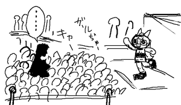
幼女のまっただ中！居心地よかったのか悪かったのか(笑)
今日はお花見。
なんとかサクラには間に合いましたかな。
で、関係ないんだども、最近「ハレのちグゥ」を見ました。
存在は知っていたんだけど、実はアニメは全然みてませんでした。（けっこうこういうこと多いです）
けっこうおもしろいね。カートゥーンではめったにみない「ツッコミ」ギャグだらけ。
そんなわけで、JL再開記念も兼ねて漫画。
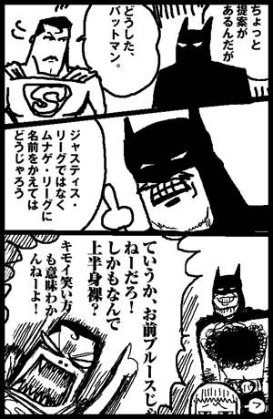
ハレ化したスーパーマン
長老は玄田さんだったのね。アニメのギャグとは別の意味で笑ってみてました。
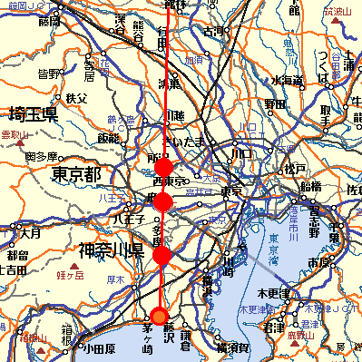
オーバーザレインボー！
パワパフシャイニングロード！！！
ウソみたいです。パワパフショーが次回は4月4日湘南フィルモールってことで、場所は「藤沢」。見事にラインが繋がりました。
このまま南下すると海にでちゃうので、ククッと曲がって次は「小田原」でしょうか。それとも、やっぱりラインにそって今度こそ「川越」？
特定の神社をマップでつないでみると、不思議なラインが浮かび上がる！ とか
犯人の犯行現場をつないでゆくと文字が現れる！ とか
そのてのモノってあるじゃないですか。まさかそれかパワパフで起こるとは。なんかエイプリルフールらしい現象で楽しいですな。
データや統計とかってそれ単体では、なんの意味もないんだけど、そこから何を読みとるかで世界がかわって見えるのが楽しいです。理工学での実験データとかだって、いくらでも文学的なものを見いだせる。（まあ、理系のデータはぶれがないようにもっと厳密ですが）
とりあえず趣味として行えば、「おもしろい推論」のほうが楽しい。